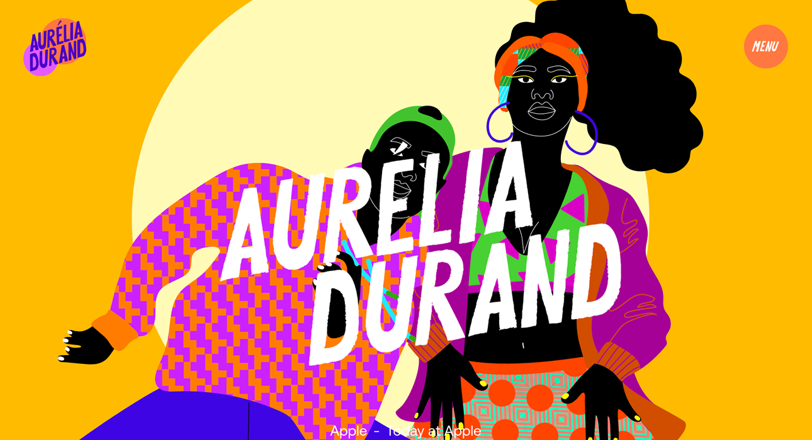
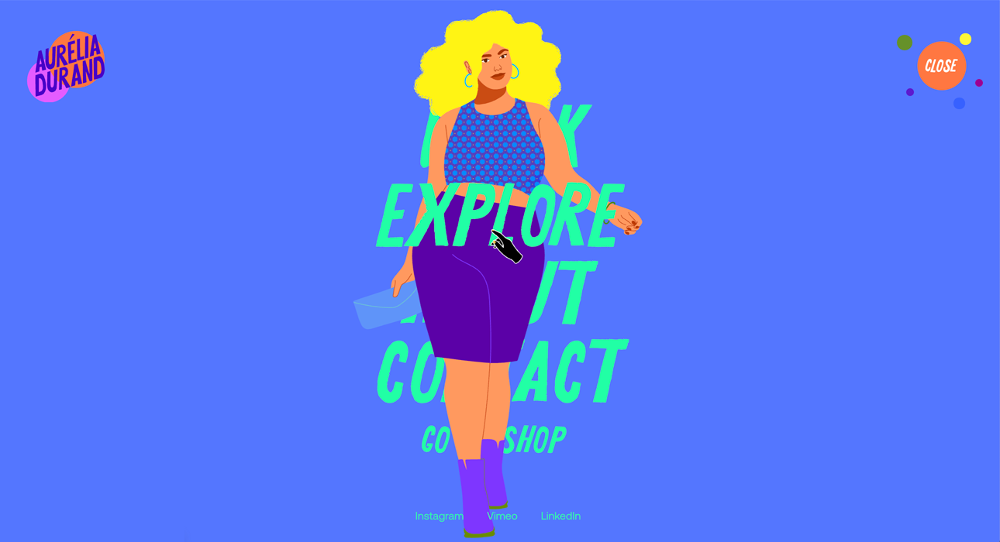

Présentation
Mon nom est Christine Masson, je suis présentement étudiante au D.E.S.S. en édition numérique afin de devenir édimestre. J'ai pris ce cours afin d'améliorer mes connaissances en HTML, CSS et, surtout, apprendre à utiliser JavaScript puisque je n'y ai jamais touché. Mes connaissances du HTML et du CSS sont très rudimentaires, mais je suis capable de me débrouiller grâce au W3School et en faisant quelques recherches.

Les illustrations et l'animation produitent par Aurélia Durand témoignent de son héritage afro-américiane et, avec l'aide de couleurs vibrantes, elle se positionne en tant qu'artiste engagée dans la communauté noire, qui se retrouve sous-représentée dans le domaine de l'animation (si l'on prend les grands studios).

Cette illustration provient de son site internet ; les navigateurs, derrières le personnage, se mettent en premier-plan dès que l'on y approche notre curseur. Ses différentes illustrations tentent, avec de petites phrases, de donner une certaine confiance en soi aux gens qui peuvent être inspirés par elle et la manière dont elle met en scène ces phrases ou ces mots.